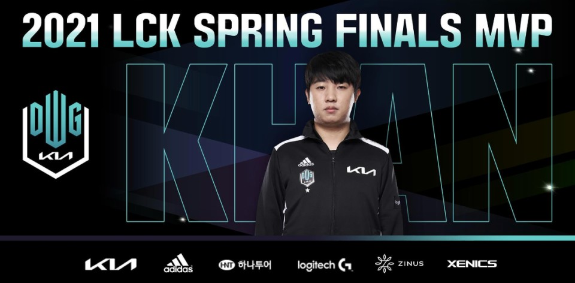

◑LCK에서 가장 나이가 많은 선수이다.
◑원래 은퇴할려고 했으나 올해 DK에 입단하게 되었다.
◑3번이나 국제대회에 우승한 경험이 있는 팀에 들어갔지만
자신은 국제대회 우승 경험이 없다.(그만큼 실력은 있다는 의미)
◑스스로 자신을 관종이라고 말할 정도로 좋게 말하면 유쾌하고
나쁘게 말하면 소란스러운 스타일
◑논란 및 사건사고 수가 압도적으로 많다.
실력으로 커버치기에도 논란이 너무 많다.

